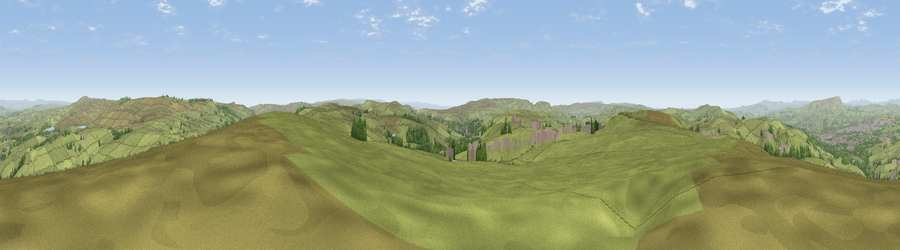

Thieveley Pike
#8000 in England · top 8% of its area beats it · near Holme ChapelWhere it is
The exact computed spot (SD 87175 27125). Click the marker for map links.
The view, rendered

A 360° render of this exact spot computed from the terrain model, tree cover and land cover — summer colours, afternoon light, calibrated against photographs of famous viewpoints. Real trees, hedges and buildings will differ in detail.
The panorama
Grey silhouette: terrain skyline in each direction (720 bearings, Earth curvature and refraction included). Dashed green: skyline with trees (+15 m) and buildings (+8 m) as obstacles. Blue strip: how far the ground is visible on each bearing.
Where the view opens
Wedge length = distance to the farthest visible ground on that bearing (vegetation-aware). Rings at 10, 25 and 50 km.
What fills the view
88% grassland · 7% woodland · 4% built-up
Angular shares of the visible panorama (visual magnitude), not map area. Landscape diversity 0.20 (0–1 Shannon).
Key numbers
More beautiful places nearby
The staircase of upgrades: each row has a higher view potential than everything closer. Driving times are estimates from straight-line distance, calibrated against real road routing — check an actual route before setting out.
| Place | Direction | Drive | Score |
|---|---|---|---|
| Viewpoint near Weir | W · 1 km | ~3 min | 66.8 |
| Viewpoint near Loveclough | WNW · 6 km | ~13 min | 68.8 |
| Great Hameldon | WNW · 8 km | ~16 min | 74.2 |
| Viewpoint near Edenfield | SSW · 10 km | ~19 min | 77.5 |
| Darwen Hill | WSW · 20 km | ~34 min | 80.7 |
| White Brow | SW · 26 km | ~41 min | 82.9 |
| Warton Crag | NW · 59 km | ~82 min | 83.2 |
| Viewpoint near Grange-over-Sands | NW · 70 km | ~93 min | 83.4 |
53.74035, -2.19592 · source: osm peak · position refined by local search. Computed location — check access rights before visiting.